ROI-01 and ROI-02: did the outlined roads exist in 2025, and were they widened?
This report collects the results of the investigation agents and our own analysis. It answers three questions for the two outlined corridors ROI-01 and ROI-02. The text follows the ASD-STE100 style where practicable. Names of datasets, places and projects are not changed.
1. Summary of answers
| Question | ROI-01 (about 18 km, Tori parish) | ROI-02 (about 8.6 km, Tarva to Kurena) |
|---|---|---|
| 1. Did the outlined road exist in 2025? | No. No road, track or rail ran along ROI-01 on 3 April 2025 (aerial photo) or on 15 June 2025 (Sentinel-2). The corridor is the planned Rail Baltica railway, not a road. | Partly. The north part of the outline is 80–200 m west of the existing national road 4 (Tallinn–Pärnu–Ikla). Road 4 existed in 2025, but no road was on the outline itself. The middle and south parts (about 4 km) follow the new road-4 alignment (Are bypass). This alignment did not exist in 2025. |
| 2. If it existed, are there signs of artificial widening? | Not applicable. A new linear clearing appeared between 15 June 2025 and 20 June 2026 inside the Rail Baltica corridor. This is new construction preparation, not widening of a road. | Yes, after July 2025, on road 4. Before July 2025 the road-4 carriageway did not change (about 10 m wide in 2023 and in April 2025). On 20 June 2026 a bare corridor (median about 90 m of low NDVI) covers the road-4 line next to the north part. This agrees with the Halinga–Kangru 2+2 widening (contract 2025-11-07). The south part shows new earthworks and a new junction. |
| 3. Do Maa- ja Ruumiamet and Transpordiamet records help? | Yes. The Rail Baltic county-plan corridor (2018), Rail Baltica land parcels (registered mostly 2025) and 37 forest clearing notices (approved July 2025 – September 2026) match the corridor. | Yes. The Transpordiamet road register places the north part in the Halinga–Kangru project (km 103.5–108.5) and the south part in the Are bypass (km 108.5–115.8). New road-4 parcels (from May 2025) and clearing notices (December 2025 – July 2026) match both projects. |
Confidence is high for the 2025 state of both corridors. Confidence is medium for project identity, because no official design or as-built geometry is public. No national aerial photograph after 3 April 2025 exists for these areas. Therefore the after-July-2025 evidence comes from Sentinel-2 satellite images at 10–20 m resolution and from official permits and news reports.
A disturbance candidate is not legal deforestation, not a confirmed forest state and not a cause label. Hansen annual loss is not monthly ground truth. Agreement between sensors or agents does not establish cause.
2. Questions and scope
The operator asked these questions on 2026-10-24:
- Did the outlined roads exist in 2025?
- If they existed in 2025, were there signs of artificial widening?
- Use information from Maa-amet (now Maa- ja Ruumiamet), Teeamet (now Transpordiamet) or similar sites if it helps to answer questions 1 and 2.
We use these periods. "Before July 2025" means acquisitions before 2025-07-01. "After July 2025" means acquisitions from 2025-07-01 to the newest data (2026-10-24). The operator gave this rule to audit-01. We did not change it.
The operator allowed online access to public, free sources. We used no credentials, no paid services and no bulk image downloads.
3. The outlined areas
The outlines are manual sampling corridors from the review of 2026-10-06. They are not surveyed road edges. audit-01 confirmed the polygons byte for byte (SHA-256 b079d3db…). The operator confirmed that these two corridors are the intended targets.
| ID | Start and end (longitude, latitude) | Ground length (EPSG:3301) | Stored length | Places |
|---|---|---|---|---|
| ROI-01 | 24.596, 58.427 (SW) to 24.815, 58.543 (NE) | 18.3 km | 22.5 km | Kilksama, Rütavere, Võlla, Suigu, Kuiaru, Selja, Murru, Muti (Tori parish) |
| ROI-02 | 24.539, 58.512 (S) to 24.509, 58.585 (N) | 8.6 km | 6.4 km | Tarva, Kangru (Põhja-Pärnumaa parish); Parisselja, Elbu, Kurena (Tori parish) |
Geometry finding from our own analysis
The stored lengths and the "40 m" buffer were calculated in the EPSG:6933 equal-area grid. This grid keeps area but not shape. At latitude 58.5° N, one 20 m grid cell is about 12 m east–west and about 33 m north–south on the ground. Thus the true lengths are 18.3 km and 8.6 km. The buffer is about 24 m wide east–west and about 65 m north–south on the ground. The hectare values in the earlier reports stay correct, because the grid keeps area. Use EPSG:3301 for distances and widths.
The manual centrelines do not follow the real features exactly. In ROI-01 the new clearing is up to about 300 m south-east of the outline in the SW half. In ROI-02 the outline is 80–200 m west of road 4 in the north part. Thus the analyses below examine a ±250 m band around each outline.
4. Information sources and methods
The round has these agents. Only the agents in the first three rows produced evidence for this report.
| Agent | Task | Status | Main outputs used |
|---|---|---|---|
| audit-01 (round-0002) | Audit of the earlier Sentinel-1/2 run: formulas, dates, hashes, ROI geometry | Completed 2026-10-24, before this round | audit_report.md |
| geo-01 (retask 0001) | Maa- ja Ruumiamet orthophotos, flight dates, basic maps, ETAK | Completed 2026-10-24 | README, geo_claims.csv, geo_sources.csv |
| works-01 (retasks 0001 and 0002) | Official road and rail records: ETAK, plans, cadastre, forest register, Transpordiamet, Rail Baltica | Completed 2026-10-24 | README, works_claims.csv, works_ledger.csv |
| synthesis-01 (this report) | Scan, analyse and summarise; own Sentinel-2 analysis | Completed 2026-10-24 | synthesis_claims.csv, transects.csv |
| discovery-01, eo-01, literature-01, challenge-01 | Planned in round-0002 | Not run | None |
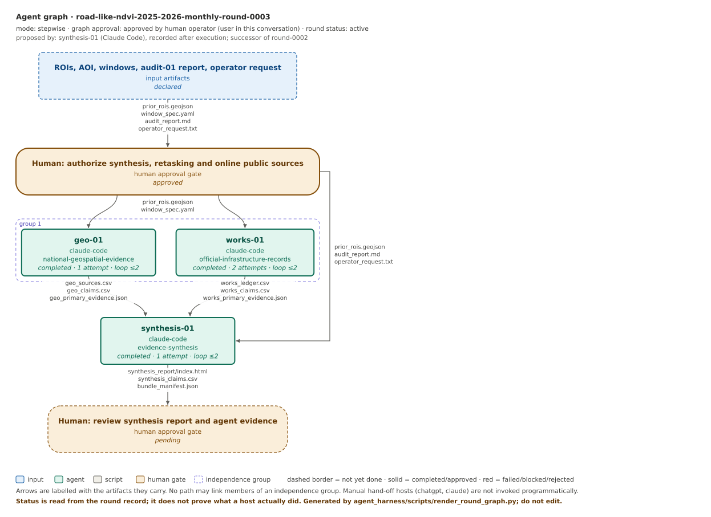
geo-01 and works-01 did not read any Sentinel or audit conclusions. Thus their evidence is independent of the satellite analysis. Their sources share one provider, Maa- ja Ruumiamet, so they count as one data lineage for maps and orthophotos.
Our own analysis (synthesis-01)
- We read the authenticated Sentinel-2 L2A data of the earlier run: scene S2C_35VLE_20250615 (15 June 2025) and the 20 June 2026 target scene. audit-01 confirmed these inputs by hash.
- We calculated NDVI = (NIR − Red) / (NIR + Red) for valid pixels (scene classes 4, 5, 6, 7).
- We made cross-profiles every 250 m along each outline. Each profile is ±250 m long with 10 m steps in EPSG:3301 ground metres.
- For each profile we measured the width of the band with NDVI lower than the profile median minus 0.15. This is a diagnostic setting for this report only. It is not a Lab threshold.
- We made true-colour image pairs of five sections for visual comparison.
Script: transects.py and section_crops.py. Results: transect_summary.json. The 20 m grid cannot measure a 10 m carriageway. It can show a change from a narrow road to a wide bare corridor.
5. Findings for ROI-01
5.1 State before July 2025
- Aerial photographs. geo-01 examined Maa- ja Ruumiamet orthophotos of 9 June 2023, 3 May 2024 (SW end only) and 3 April 2025. They show no road, track, rail or cleared line along the axis at four 600 m sites and in a 10 m overview. Only older gravel roads, tracks, ditches and block clear-cuts cross the outline (geo-01 claims GC-01 to GC-03).
- Maps. The 2024 and 2026 basic-map editions and the current ETAK database show no road or rail along ROI-01. The longest road piece inside the outline is 421 m, and it crosses the outline (works-01 C01, geo-01 GC-05).
- Sentinel-2, 15 June 2025. Our cross-profiles show no continuous low-NDVI band. The median minimum NDVI in the profiles is 0.82, which is typical of closed vegetation.
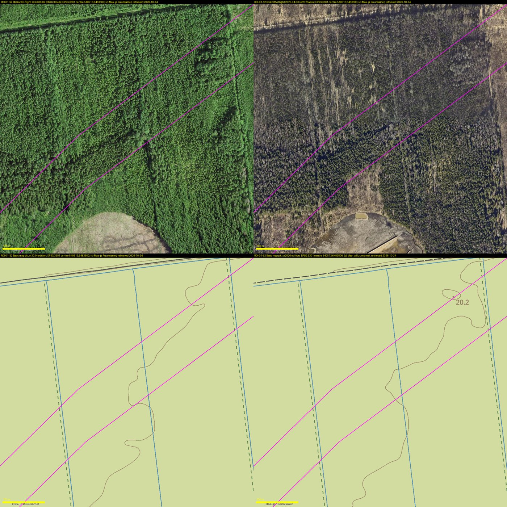
5.2 State after July 2025
- Sentinel-2, 20 June 2026. A new linear corridor with low NDVI (about 0.35–0.6) appears along most of the NE 11 km. In 34 of 73 profiles the low-NDVI band became at least 40 m wider. The median band width changed from 0 m to 30 m. In the SW half the new line runs about 300 m south-east of the outline (Figure 3).
- Official permits. 37 forest clearing notices (raadamine, "RD": clearing for a change of land use) were approved between 2025-07-04 and 2026-09-07. They cover 26.7 ha inside the outline. 21 notices were approved on 2025-09-11 or 2025-09-24 (works-01 C04).
- No aerial photograph exists after 3 April 2025. Thus the clearing can only be seen in the satellite data.
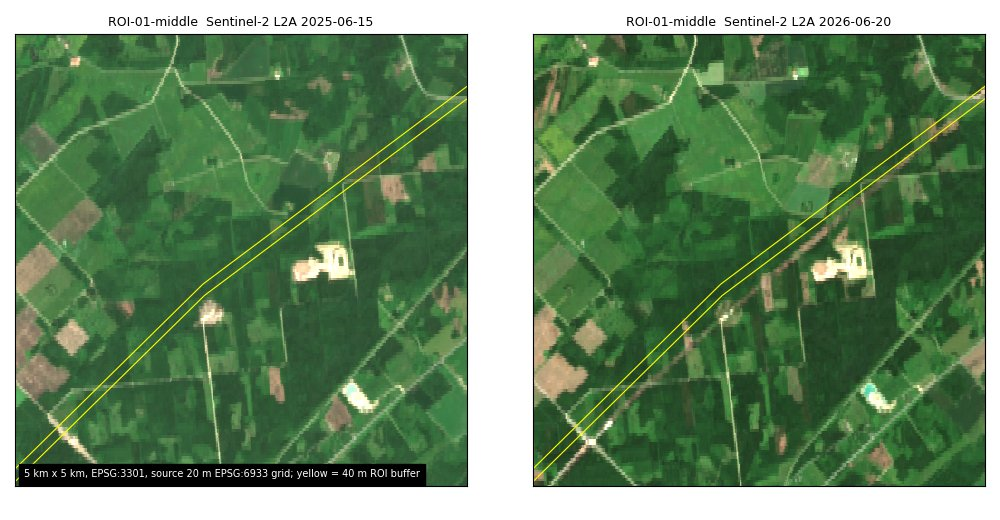
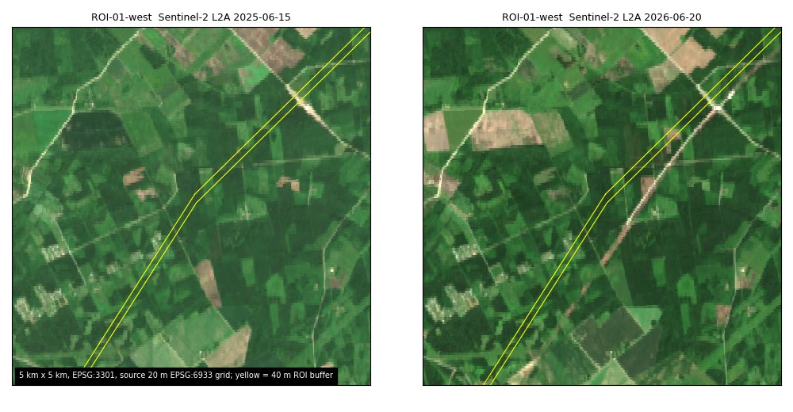
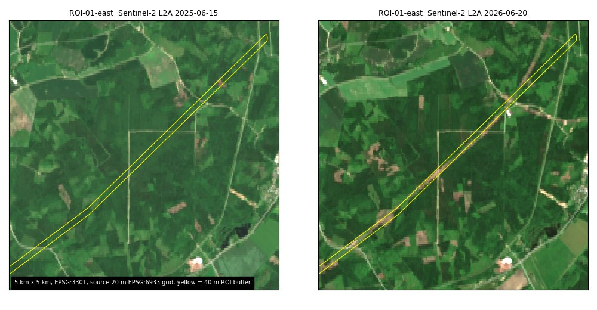
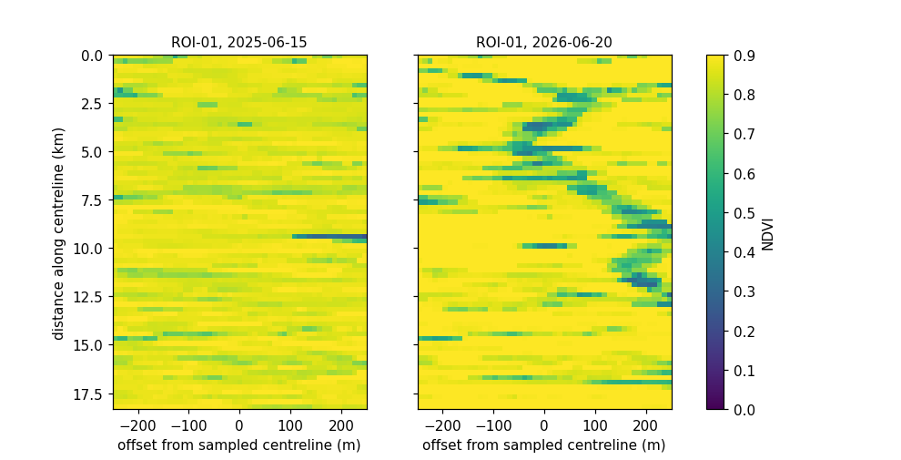
5.3 Identity of the corridor
works-01 intersected the outline with official vectors (Figure 6).
- 46% of the ROI-01 area is inside the Rail Baltic railway corridor of the county plan "Rail Baltic raudtee trassi koridori asukoha määramine" (legal date 2018-02-14).
- State parcels named "Rapla-Pärnu raudtee NNN" cover 12.8% of the area. Most were registered in 2025, for example 2025-05-16, 2025-06-11 and 2025-11-28.
- The Rail Baltica Tootsi–Pärnu design-and-build alliance contract was signed on 2025-05-16 (about 394 MEUR). Active works are planned for 2026–2030 (ERR news, 2025-05-16 and 2025-06-12).
The clearing notices continue to the SW end inside the corridor, south-east of the outline (Figure 6). Our satellite clearing line follows the same path. Thus we conclude that the new 2026 linear feature is most probably Rail Baltica corridor clearing. This is a conclusion from consistent geometry and dates. No as-built alignment is public.
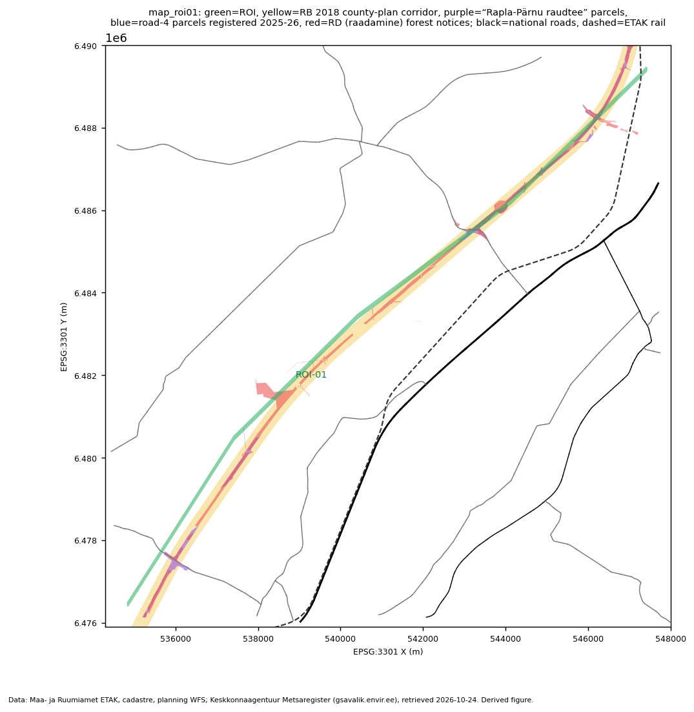
6. Findings for ROI-02
6.1 State before July 2025
- Road 4 existed. The orthophotos of 2023-06-09 and 2025-04-03 show a paved two-lane road with vehicles just east of the outline (Figure 7). ETAK has held its geometry since 2008 (works-01 C09).
- No widening before July 2025. geo-01 measured the bright paved surface on 11 transects. The width was about 10.6 m in 2023 and about 10.0 m in April 2025 (±1.5 m). There were no new lanes, embankments or wider clearings (geo-01 GC-11).
- The south part was fields and farmyards. At site S2 the 2023 and 2025 orthophotos show fields, a gravel road crossing and homesteads (Figure 8). Sentinel-2 on 15 June 2025 shows vegetation (NDVI about 0.85) on the full south 1.9 km.
- No clearing permits before December 2025. The forest register has no RD notices in ROI-02 before 2025-12 (works-01 C14).
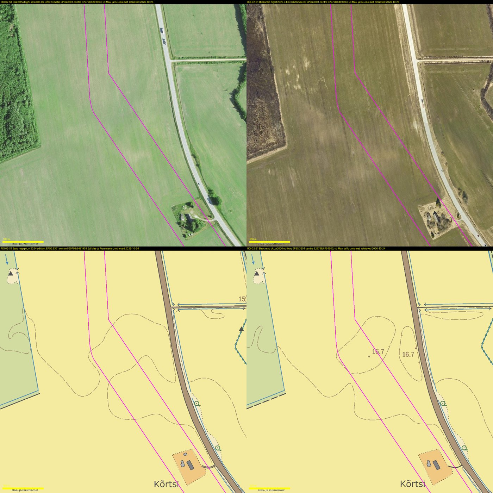
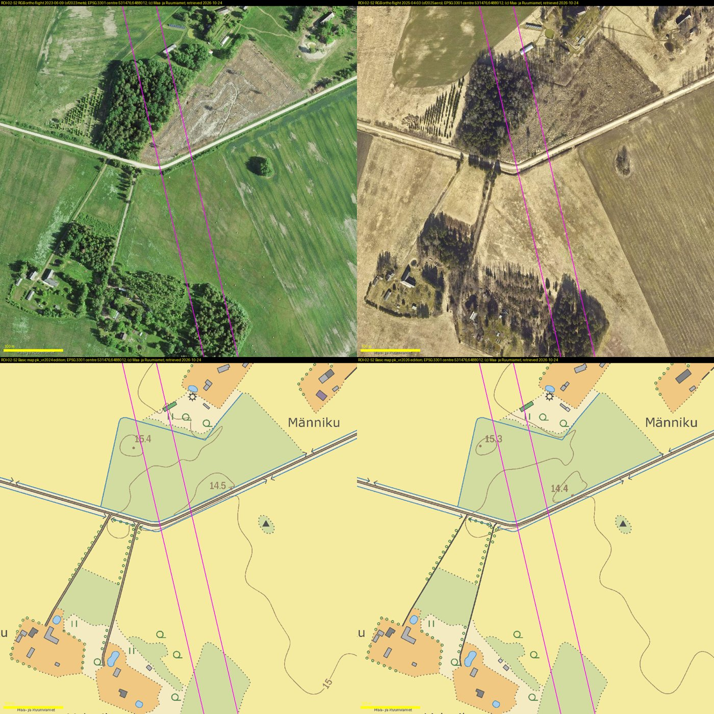
6.2 State after July 2025
North part (about 4.4–8.6 km from the south end). On 20 June 2026 Sentinel-2 shows a bright bare corridor along road 4 (Figure 9). The corridor is on the road line, east of the outline. In the cross-profiles the minimum NDVI fell from about 0.33–0.76 in 2025 to about 0.06–0.29 in 2026. The width of the low-NDVI band increased from 0–90 m (median 30 m) to 50–170 m (median 90 m). The 2025 values show the narrow road as mixed pixels. The 2026 values show clearing, topsoil removal and new embankments on both sides of the carriageway. This is the typical appearance of road widening works.
Official records agree. Within ±200 m of the north part, 18 RD clearing notices (6.2 ha) were approved between 2025-12-10 and 2026-07-17, most of them on 2026-01-12. Almost all notices lie 11–19 m from the road edge. 25 new road-4 parcels were registered between 2025-08-25 and 2026-10-22, all along the existing road (works-01 C16–C21).
South part (0–1.9 km from the south end). On 20 June 2026 the south part is bare soil with NDVI about 0.04–0.1. A new junction with ramps and a crossing branch is visible (Figure 10). There was no road here in June 2025. This is new construction, not widening.
Middle part (about 1.9–4.4 km). Here the outline leaves road 4. Its distance from road 4 increases from 82 m to 810 m. This agrees with the new bypass alignment (works-01 W5). The profiles show bare soil at several stations but no continuous band in June 2026. Possibly, works on this part had not started, or the outline is offset from the new alignment.
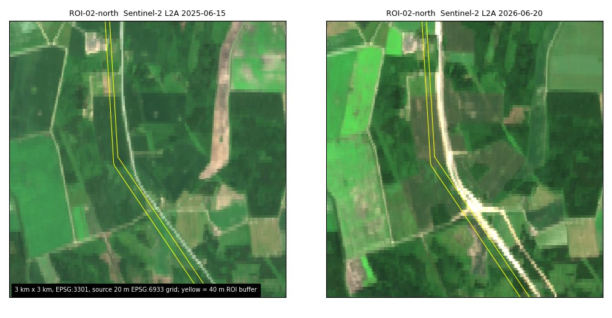
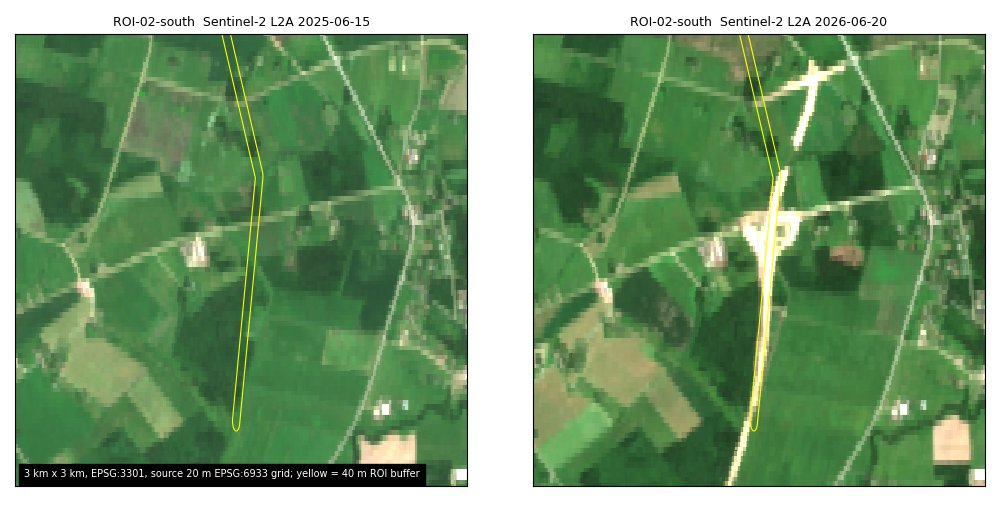
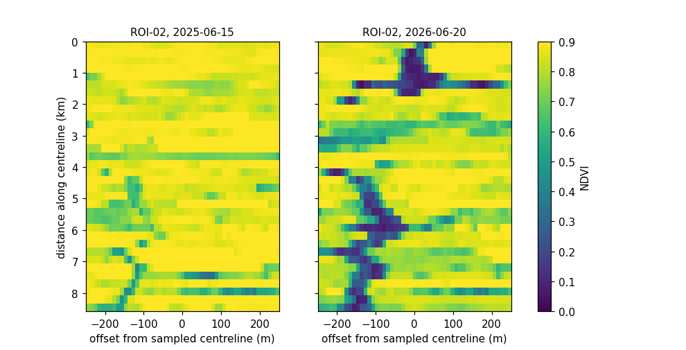
6.3 Identity of the corridor
works-01 placed the road-register kilometre points of road 4 (Transpordiamet road register, dated 2026-10-22, accuracy about ±50 m). km 103.5 is at 58.5877 N, 24.5123 E. km 108.5 is at 58.5467 N, 24.5382 E.
| ROI-02 part (latitude) | Project | Distance from road 4 in the register | Assessment |
|---|---|---|---|
| North, 58.550–58.585 N | Road 4 Halinga–Kangru 2+2, km 103.5–108.5, on the existing route | 82–203 m west (median 177 m) | The outline is next to the widened road, not on it. The changed feature is road 4. |
| Middle, 58.528–58.550 N | End of Halinga–Kangru, then Are bypass | 82 m increasing to 810 m | Agrees with the new bypass alignment |
| South, 58.513–58.528 N | Road 4 Are bypass 2+2, km 108.5–115.8, new alignment | 660–830 m | On new road-4 parcels and RD notices. Confidence: medium (no public design map). |
- Are bypass. New state parcels "4 Tallinn-Pärnu-Ikla tee" were registered from 2025-05-22. They cover 18–85% of the outline per 500 m in the south part. An RD notice of 2025-12-11 is an 816 m strip, and 83% of it is inside the outline. Contractor: AS TREF Nord, contract signed 2025-11-18, 36.5 MEUR. Construction started on 2026-02-02 with clearing. Earthworks started in March 2026 (works-01 C10–C12).
- Halinga–Kangru. Contractors: KMG OÜ and Infragreen OÜ, contract signed 2025-11-07, 25.5 MEUR + VAT, 30 months. Transpordiamet states that the project "copies the location of the existing route" ("kopeerib asukoha mõttes olemasolevat trassi"). The first dated physical work is the demolition of the old Halinga railway viaduct on 2026-04-02.
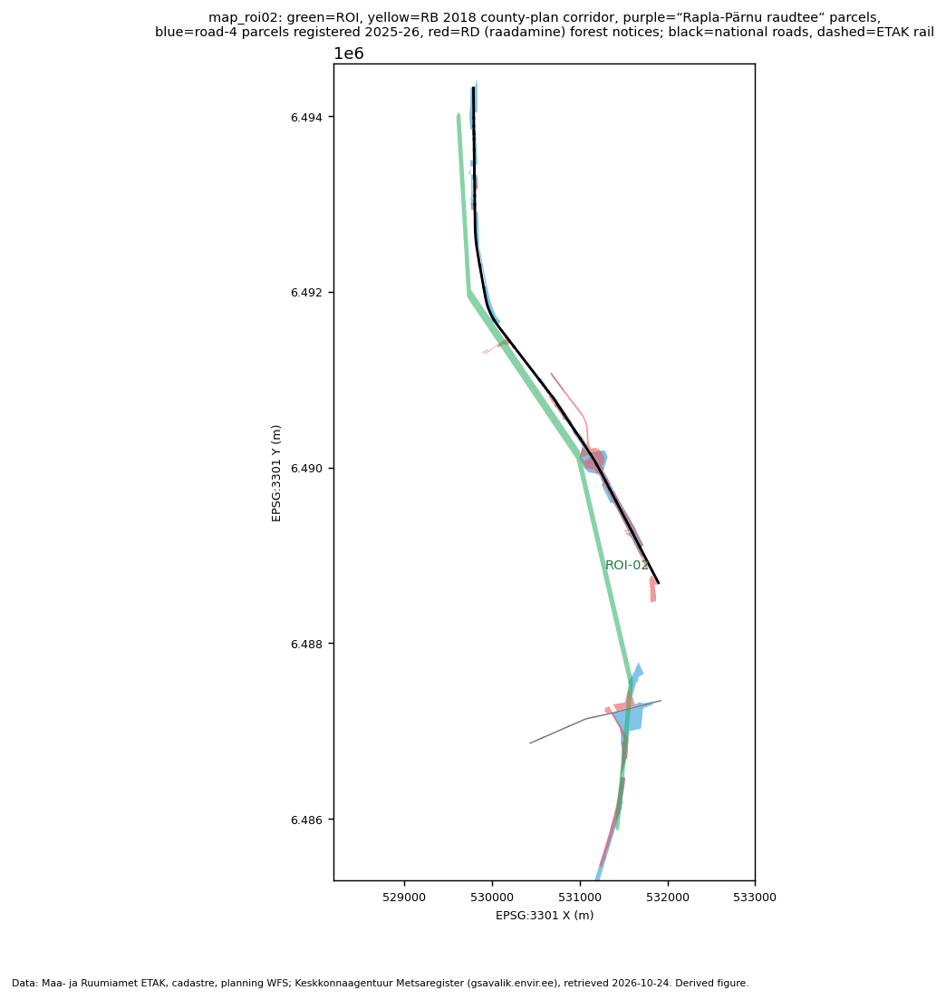
7. Information from Maa- ja Ruumiamet and Transpordiamet
7.1 Maa- ja Ruumiamet (formerly Maa-amet)
- Flight dates. The WMS "metainfo" layer gives a flight date of 09.06.2023 for all requests. This value is out of date. The official per-sheet download lists give the true dates. The 2025 orthophoto ("of2025aero") of all ROI sheets was flown on 2025-04-03 (leaf-off). The earlier flights were 2023-06-09 and 2021-04-19 (geo-01 GC-13). This resolves the date conflict that audit-01 reported.
- No newer photographs. No orthophoto after 2025-04-03 is published for these sheets. There is no 2026 layer. Thus the "after July 2025" comparison is not possible with national aerial photographs.
- Maps. ETAK and the basic maps of 2024 and 2026 do not yet show Rail Baltica or the new road-4 alignment. Map absence is weak evidence for recent change, because the update delay is not known.
- Cadastre and plans. The cadastre shows new Rail Baltica parcels (mostly 2025) and new road-4 parcels (from 2025-05-22). The planning layer shows the 2018 Rail Baltic corridor. These records show land acquisition and plans. They do not show construction.
7.2 Keskkonnaagentuur forest register (Metsaregister)
The forest register shows clearing permits (RD notices). Approval dates are permit dates, not felling dates. ROI-01: 37 notices, 2025-07-04 to 2026-09-07. ROI-02: 7 notices, 2025-12-11 to 2026-07-17. The Sentinel-2 images of 20 June 2026 show that clearing actually occurred in both corridors.
7.3 Transpordiamet (formerly Maanteeamet, "Teeamet") and Rail Baltica
- Transpordiamet project page "Tallinna–Pärnu–Ikla maantee ehitustööd 2026–2027" (updated 2026-06-09): Halinga–Kangru 2+2 (km 103.5–108.5) is on the existing route. Contract with KMG OÜ and Infragreen OÜ, signed 2025-11-07. Are bypass (km 108.5–115.8, 6.9 km) is mostly on a new route. Contract with AS TREF Nord, signed 2025-11-18.
- Transpordiamet road register (ArcGIS map service, km points dated 2026-10-22): gives the kilometre positions in section 6.3. The register does not yet contain the new bypass alignment.
- Transpordiamet news (2026-03-05): announces the largest works on the Tallinn–Pärnu road and the traffic changes.
- Rail Baltica Tootsi–Pärnu section: alliance contract signed 2025-05-16. Active works are planned for 2026–2030 (ERR, quoting Rail Baltic Estonia).
The Rail Baltica facts and the construction start dates come from ERR news articles that quote Transpordiamet and Rail Baltic Estonia. ERR is a secondary source. The public procurement register was not machine-readable, so no contract numbers are confirmed.
8. Conflicts, limits and open items
- No aerial photograph after April 2025. All after-July-2025 physical evidence comes from two Sentinel-2 scenes (2025-06-15 and 2026-06-20) at 20 m. These scenes cannot measure a carriageway width. They show only the change from a narrow road to a wide bare corridor.
- Single scenes. Each year has one scene. Crop and grass phenology differ between the dates. Bare fields near the outlines can look like works. We used the shape and continuity of the features to separate them.
- Outline offset. The manual outlines miss the real features by up to about 300 m (ROI-01 SW) and 80–200 m (ROI-02 north). We interpret the ROI-02 north outline as a coarse trace of road 4. The operator must confirm this interpretation. Statistics inside the original buffers dilute the change. Use the ±250 m profiles.
- Stored lengths. The stored ROI lengths (22.5 km and 6.4 km) are EPSG:6933 lengths. The ground lengths are 18.3 km and 8.6 km. geo-01 and works-01 quoted the stored values in their reports.
- Project identity. No as-built or design geometry for Rail Baltica or the road-4 projects is public. Identity rests on plans, parcels, permits and news text.
- Secondary sources. The ERR articles form one source lineage. Two ERR articles name different lead partners for the Rail Baltica alliance.
- Agreement is not independence. Orthophotos, maps, cadastre and plans come from one agency. Sentinel-2 is the only independent physical source after April 2025.
- Not assessed. Prior forest state, legal status of any clearing, and control areas (orthophotos not requested).
9. Recommended next steps
- Re-draw ROI-01 and ROI-02 on the real features before any new measurement. Use EPSG:3301 for buffers and lengths.
- Make true calendar-month Sentinel-2 composites (July 2025 to October 2026) to date the start of clearing in each section. This is the planned eo-01 task.
- Check the 2026 national orthophoto when Maa- ja Ruumiamet publishes it. Then repeat the geo-01 width transects.
- Get design drawings from Transpordiamet and Rail Baltic Estonia, and contract numbers from the procurement register.
- A human reviewer must accept or reject these findings at the round gate.
10. Source list
| ID | Source | Date | Use |
|---|---|---|---|
| S01 | Maa- ja Ruumiamet: Historical orthophoto WMS (of2023mets, of2024asulad, of2025aero; basic maps pk_vr2024, pk_vr2026) Agent record: geo-01 GS-07..GS-12 | flights 2023-06-09, 2024-05-03, 2025-04-03; retrieved 2026-10-24 | Presence/absence before July 2025; road width 2023 vs 2025 |
| S02 | Maa- ja Ruumiamet Geoportaal: Orthophoto download lists per map sheet (flight dates) Agent record: geo-01 GS-05, GS-06 | listing retrieved 2026-10-24 | True flight dates; no flight after 2025-04-03 |
| S03 | Maa- ja Ruumiamet: Current orthophoto WMS (EESTIFOTO) Agent record: geo-01 GS-10 | current = 2025-04-03 flight; retrieved 2026-10-24 | No newer national imagery |
| S04 | Maa- ja Ruumiamet (ETAK) via Keskkonnaagentuur GeoServer: ETAK roads, rail, cutlines, power lines (WFS) Agent record: geo-01 GS-13; works-01 E01-E03 | state 2026-10-24 | No mapped road or rail along the outlines |
| S05 | Maa- ja Ruumiamet: Rail Baltic county-plan corridor and planning restriction (WFS) Agent record: works-01 E04, E05 | plan legal date 2018-02-14 | ROI-01 identity |
| S06 | Maa- ja Ruumiamet: Cadastre: 'Rapla-Pärnu raudtee' and '4 Tallinn-Pärnu-Ikla tee' parcels (WFS) Agent record: works-01 E06-E08 | registrations 2020-2026 | Land acquisition for Rail Baltica and road 4 |
| S07 | Keskkonnaagentuur: Metsaregister forest notices, valid and archived (WFS) Agent record: works-01 E09, E10 | approvals 2016-2026 | Clearing permits (RD) in both corridors |
| S08 | Transpordiamet: Road register (Teeregister) ArcGIS service: road 4 km points and sections Agent record: works-01 E21, E22 | km points 2026-10-22 | Project km positions vs ROI-02 |
| S09 | Transpordiamet: Tallinna–Pärnu–Ikla maantee ehitustööd 2026–2027 (project page) Agent record: works-01 E23 | updated 2026-06-09 | Halinga–Kangru and Are bypass scope and contracts |
| S10 | Transpordiamet: News: Halinga–Kangru 2+2 tender received six bids Agent record: works-01 E24 | 2025-09-26 | Halinga–Kangru procurement |
| S11 | Transpordiamet: News: Halinga railway viaduct demolition Agent record: works-01 E25 | 2026-03-25 | First dated Halinga–Kangru works |
| S12 | Transpordiamet: News: largest road construction works on the Tallinn–Pärnu road Agent record: works-01 E18 | 2026-03-05 | Works on road 4 in 2026 |
| S13 | ERR: Algavad Are möödasõidu 2+2 teelõigu ehitustööd Agent record: works-01 E16 | 2026-01-29 | Are bypass works start 2026-02-02 |
| S14 | ERR: Uuel aastal algavad Tallinna-Pärnu maanteel üha suuremad ehitustööd Agent record: works-01 E15 | 2025-12-04 | Road 4 project overview |
| S15 | ERR: Are möödasõidule tuleb uus ehitushange Agent record: works-01 E17 | 2025-07-04 | Are bypass tender re-run |
| S16 | ERR: Transpordiamet ja kaitsevägi varistasid vana Halinga raudteeviadukti Agent record: works-01 E26 | 2026-04-02 | Halinga viaduct demolished |
| S17 | ERR: Rail Baltic Estonia sõlmis suurimad taristuehituse lepingud Eesti ajaloos Agent record: works-01 E12 | 2025-05-16 | Rail Baltica Tootsi–Pärnu contract |
| S18 | ERR: Rail Balticu Eesti põhitrassi võtmelõikude ehitus algab järgmisel aastal Agent record: works-01 E13 | 2025-06-12 | Rail Baltica works planned from 2026 |
| S19 | Copernicus / Element 84 (AWS): Sentinel-2 L2A COGs, scene S2C_35VLE_20250615 and 2026-06-20 target Agent record: runs/aoi-s2-jja-2025-2026-calibrated; audit-01 authenticated | acquired 2025-06-15 and 2026-06-20 | Physical change after July 2025 (own analysis) |
| S20 | synthesis-01 (own analysis): NDVI cross-profiles and true-colour section pairs Agent record: scripts/transects.py; scripts/section_crops.py | 2026-10-24 | Corridor change 2025 vs 2026; ground-length correction |
| S21 | audit-01 (round-0002): Audit of the earlier Sentinel-1/2 run Agent record: round-0002/artifacts/audit-01 | 2026-10-24 | Input authentication; date conflict reported |
11. Bundle contents
Download this folder with all subfolders. Open index.html in a browser. The page needs no network access. Online links in the source list are optional.
assets/img/: figures (compressed copies; originals are in the agent folders of round-0003).data/: synthesis_claims.csv, synthesis_sources.csv, transects.csv, transect_summary.json.evidence/: copies of the audit-01, geo-01 and works-01 reports, claims and ledgers.scripts/: the synthesis-01 analysis scripts.- bundle_manifest.json: SHA-256 of every file in the bundle.